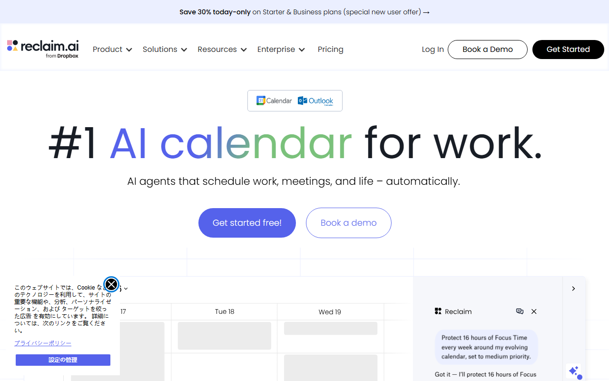

Reclaim.aiは日本語で使える？画面・予定名・サポート・支払いの対応範囲
Reclaim.aiは、空き時間にタスクや習慣、会議を自動配置するAIカレンダーです。GoogleカレンダーとOutlookに対応しています。
画面とサポートは英語のみ。この記事では、日本語の予定名が使えるかを軸に、日本時間の設定と支払い方法も解説します。
Reclaim.aiの日本語対応状況を5項目で確認
- 画面（UI）：英語。日本語切替は未確認
- 予定名・タスク名：日本語対応の公式明記なし
- 日本時間：Home・Travel timezoneに対応
- サポート：チャットとメール。日本語は未確認
- 料金：Liteは無料。有料は1席単位
英語で初期設定でき、普段の予定は連携先カレンダーで見る人に向いています。
Liteは無料で、14日間のトライアルもあります。公式サイトでは、Liteと14日間のトライアルの案内を見られます。
画面（UI）は日本語に切り替えられる？ブラウザ翻訳で読む方法と限界
アプリ内に日本語へ切り替える設定は、公式ヘルプでは確認できません。 表示を読むだけなら、ブラウザの翻訳機能を使うのが現実的です。公式サイトとHelp Centerにも日本語版は見当たりません。

トップページは英語表示です。Google CalendarとOutlookのロゴに加え、無料開始ボタンが並んでいます。
ChromeやSafariの翻訳機能で画面を日本語表示する
Chromeなら、画面の何もないところで右クリックして「日本語に翻訳」を選びます。MacのSafariなら、アドレスバーの翻訳ボタンから「日本語に翻訳」を選びます。
翻訳がうまく効かないときの対処
操作に合わせて内容が変わるWebアプリでは、翻訳が一部にしか効かないことがあります。操作のたびに英語へ戻る場合も。再読み込み後も直らないときは、Settingsなど英語で操作する画面のメニュー名だけ覚えるほうが早道です。
英語のまま読んだほうがよい画面は、主に次の3か所です。
- SettingsのHours：タイムゾーンの設定
- SettingsのIntegrations：Todoistなど、外部ツールとの連携
- Billing & Team：プラン、支払い、請求書、解約。右上のプロフィール写真から開く
それ以外は、翻訳が崩れても次に挙げる英語メニューを手がかりに操作できます。
最初に覚えておくと迷わない英語メニュー
アプリの主なメニューは Planner・Scheduling・Insights・Settings・Team の5つです。画面によく出てくる言葉と、その意味は次のとおりです。
- Tasks：作業時間と締め切りを登録すると、空き時間に作業枠が入る。AIチャットかTasksパネルから作成
- AI Agents：Habitsなど、時間を自動で確保する4つの機能の総称
- Habits：昼休みや運動など、毎日・毎週くり返す時間を確保する
- Focus Time：集中して作業する時間をまとめて確保する
- Buffers：会議の前後や移動のための余白。料金ページでは「Buffer Time」と書かれている
- Smart Meetings：定例会議を、参加者の都合に合わせて動かす
- Scheduling：相手に空き時間から日時を選んでもらう予約リンク（Scheduling Links）を作るメニュー
公式サイトでは、カレンダー連携や自動配置の主な機能を英語で見られます。
日本語の予定名・タスク名はそのまま使える？
日々の予定確認は、GoogleカレンダーやOutlookの日本語画面で行えます。 一方、Reclaim.ai側で日本語の名前を付けたときの扱いは、公式ヘルプに明記がありません。
Googleカレンダー・Outlookでの見え方
Reclaim.aiが確保した作業枠や習慣の時間は、連携したカレンダーへ予定として書き込まれます。会議前後の余白も同じです。スマホのGoogleカレンダーやOutlookが日本語表示なら、日付やボタンも日本語表示のまま。英語に触れるのは、主にReclaim.aiで設定を作ったり変えたりするときです。
利用者の体験記には、初期設定が済めば英語の画面はさほど気にならないという声があります。ふだん目にするのは、自分が日本語で付けたタスク名だからです。
タスク・習慣・予約リンクに日本語の名前を付ける
公式ヘルプの例は英語だけで、日本語の名前を使えるとも使えないとも書かれていません。項目別に見ると、次のとおりです。
- タスク名（Tasks）：日本語の名前を使っている利用者の報告はあるが、公式の明記はない
- 習慣名（Habits）：公式の明記はない
- 予約リンクの名前と説明（Scheduling Links）：自由に入力する欄だが、日本語でどう表示されるかの記載はない
タスクはAIチャットからも作れますが、日本語の指示に対応するかは公式に書かれていません。Liteで作れるScheduling Linkは1件。契約前に、日本語の名前でタスクと予約リンクを1件ずつ登録してください。連携先カレンダーと予約画面で、実際の見え方を確かめられます。
Todoistなど連携先のタスクを日本語で入れる
タスクの入力を、日本語画面のツールで済ませる方法もあります。日本語UIのあるTodoistでタスクを入力し、Reclaim.aiにはカレンダー上の時間枠づくりだけを任せます。
ただし、Todoist連携にはReclaim.aiの有料プラン（Starter以上）が必要。無料のLiteは対象外です。 Todoist側は無料プランのままで構いません。接続先はSettingsのIntegrations。費用はReclaim.ai Starterの年払いで1席あたり月$10です。
Liteで使える連携は、Google Tasks・Slack・Zoom・Google Meetに限られます。費用をかけずに外部のタスク管理とつなぐなら、候補はGoogle Tasksです。
製品ページでは、タスクや習慣の配置に加え、会議の自動調整も紹介されています。
日本時間で予定がずれないようにするタイムゾーン設定
基準となるHome timezoneは、ブラウザの設定から自動入力されます。日本のPCから登録した場合、基準は日本時間。 海外出張の期間だけ別の時間帯にしたいときは、Travel timezoneで開始日と終了日を指定します。
Home timezoneを確認する
登録を済ませたら、次の手順で設定を見直します。
- SettingsのHoursを開き、タイムゾーンの欄を見る
- Home timezoneが日本時間になっているかを見る
- 日本以外になっていたら、ドロップダウンから日本時間を選び直す
作業枠が深夜や早朝に入るようなら、まずここを疑ってください。
海外出張・海外とのやり取りがあるとき（Travel timezone）
Travel timezoneに登録するのは、出張先のタイムゾーンと期間。終了日を過ぎるとHome timezoneへ自動で戻るため、帰国後の設定は不要です。出張が続く月は、複数の予定をまとめて登録しておけます。
日本語で問い合わせできる？サポートの窓口と受付時間
問い合わせ窓口は、アプリやサイト内のライブチャットとメール。対応言語の記載はなく、日本語での回答も確認できません。 英語で問い合わせる前提です。
- 窓口：アプリ／サイト内のライブチャット、メール
- 受付時間：平日7:00〜17:00（米太平洋時間）
受付時間を日本時間に直すと
米国の夏時間の間は日本時間の23時〜翌9時、冬時間の間は0時〜10時にあたります。夏時間の切り替えで、時刻が1時間ずれます。
日本の日中は、ちょうど先方の営業時間外です。夕方に送った問い合わせへの返信は、日本の深夜から朝に届く計算です。月曜の日中は先方がまだ日曜日。週明けの相談に返事が届くのは、月曜の深夜以降です。
英語で問い合わせるときのコツ
- 使っているプラン（Lite、Starterなど）と、連携しているカレンダー（Google、Outlook）を最初に書く
- 困っている画面は、TasksやHabitsなどの英語表記のまま書く。翻訳後の日本語名では相手に伝わらない
- メールで送るときは、画面のスクリーンショットを添付する
上部メニューのResourcesから、英語のヘルプ情報や問い合わせ先へ進めます。
料金と、日本から契約するときの支払い・請求書・解約
Liteは無料。有料プランはクレジットカードかApple Payで支払えます。 請求書はStripeの画面から自分でダウンロードする方式です。
プランの一覧（無料のLiteから始められる）
料金はUSD建てで、1席（1ユーザー）あたりの月額です。
- Lite：無料。1ユーザー向け。主な範囲は次のとおり
- 自動で予定を組む範囲：1週間先まで
- Calendar Sync：1件
- Scheduling Link：1件
- AI Agents：HabitsやFocus Timeなどを合わせて5つ
- 連携：限定的
- Starter：年払い$10／月払い$12（最大10席）
- Business：年払い$15／月払い$18（最大100席）
- Enterprise：年払い$22（100席超。月払いなし）
1ドル=157円換算（執筆時点の目安。為替で変動）では、Starterの年払いは1席あたり月約1,570円です。Businessの年払いは月約2,355円。どちらも月払いより年払いのほうが、月あたりの金額を抑えられます。
新規アカウントには14日間の無料トライアル付き。終了後にアップグレードしなければ自動でLiteへ移り、課金は発生しません。
Liteで足りるかは、1週間先までの自動配置とCalendar Sync 1件が判断基準です。契約前に見極めれば、不要なアップグレードを避けられます。
日本から使える支払い方法
支払いはStripe経由で、主要なクレジットカードとApple Payに対応しています。口座引き落とし（ACH／SEPA）は、米国やSEPA圏の銀行口座が対象。日本の銀行口座からは使えません。
公式にはカードブランドごとの一覧がなく、JCBの可否も未記載。JCBを使いたい場合は、Liteからアップグレードする際に、決済画面で選べるか確かめてください。
10席以上をまとめて購入する法人は、Net30（請求から30日以内の支払い）の請求書払いも相談可能です。
請求書（invoice）の受け取り方
Billing & Teamから、Stripeの「Billing details & invoices」へ進みます。そこに支払い履歴と請求書が表示され、請求書はダウンロード可能。
請求先の情報をあとから変えても、過去の請求書は作り直せません。会社名や住所を入れるなら、最初の支払い前に。日本の「適格請求書発行事業者」の登録番号が記載されるかは明記されていません。消費税やインボイス制度上の扱いは、税理士に相談してください。
解約・一時停止と無料プランへの戻り方
- Billing & Teamから、自分で解約または一時停止できる
- 解約は今の請求期間の終わりに有効になり、それまでは有料機能を使える
- 期間が終わると自動でLiteへ戻り、以後の課金はない
- 年払いは、購入から30日を過ぎると返金されない
英語の画面に慣れるまでは、月払いが向いています。年払いは30日を過ぎると返金されないため、合わなかったときの負担を抑えられます。
英語の画面がつらいなら：日本語で使える代替の選び方
日本語の画面を優先するなら、代替候補はTodoistです。空き時間へ作業枠を自動配置する機能がないため、日本語と自動配置のどちらを優先するかで選択が分かれます。
- 日本語の画面を優先する：タスク管理をTodoistに移す。時間枠は自分でカレンダーに置く
- 自動で時間枠が入る仕組みを優先する：Reclaim.aiを続け、英語は初期設定の間だけと割り切る
- 両方ほしい：Todoistで日本語のタスクを入れ、Reclaim.ai Starter以上で連携する
日本語の画面が必須なら：Todoist

トップページは日本語で表示され、画面内に「無料で開始する」ボタンがあります。
Todoistの画面と公式ヘルプセンターは、日本語に対応。請求や解約の案内も日本語です。
支払いは日本円とJCBに対応。有料のProは月払い894円／年払い8,064円と円建ての料金が示されているため、為替を気にせずに予算を組めます。Beginnerでも個人プロジェクトを5件まで無料で使えますが、カレンダーレイアウトは有料のProからです。
ただし、Todoistは日付と時刻を自分で決めてタスクを並べる道具です。Reclaim.aiのように空き時間へ作業枠を入れる機能はないため、乗り換え後は自分で時間を割り振ります。
Beginnerで日本語の画面を試し、カレンダーレイアウトが必要になってからProへ切り替えれば十分です。
予定名が日本語なら十分なら：Reclaim.aiを続ける
次の条件に当てはまるなら、英語の画面でもReclaim.aiを続ける価値があります。
- 英語に触れるのは、初期設定と月に数回の設定変更くらい
- 普段の予定確認は、GoogleカレンダーやOutlookで済ませている
- 作業枠の自動配置で減る手間が、英語を読む負担より大きい
タスクの入力を日本語画面のツールで済ませたいなら、Todoistとの組み合わせも候補です。この場合、Reclaim.ai側は有料のStarter以上が必要です。
まとめ
Reclaim.aiの画面とサポートは英語が前提。予定は連携先カレンダーの日本語画面で見られ、日本時間もブラウザの設定から自動で入ります。英語を読むのは、初期設定と問い合わせのとき。予約リンクを送る前にも、英語で内容を確かめます。
新規登録すると14日間のトライアルが始まり、終了後はLiteへ移ります。その14日間で見ておきたいのは、日本語のタスク名や予約リンクの表示。英語の画面が日々の負担になりそうなら、自動配置より日本語を優先し、Todoistへ移る選択肢もあります。
Liteに移ったあとも、Scheduling Link 1件は無料のまま。Calendar Sync 1件も使い続けられます。